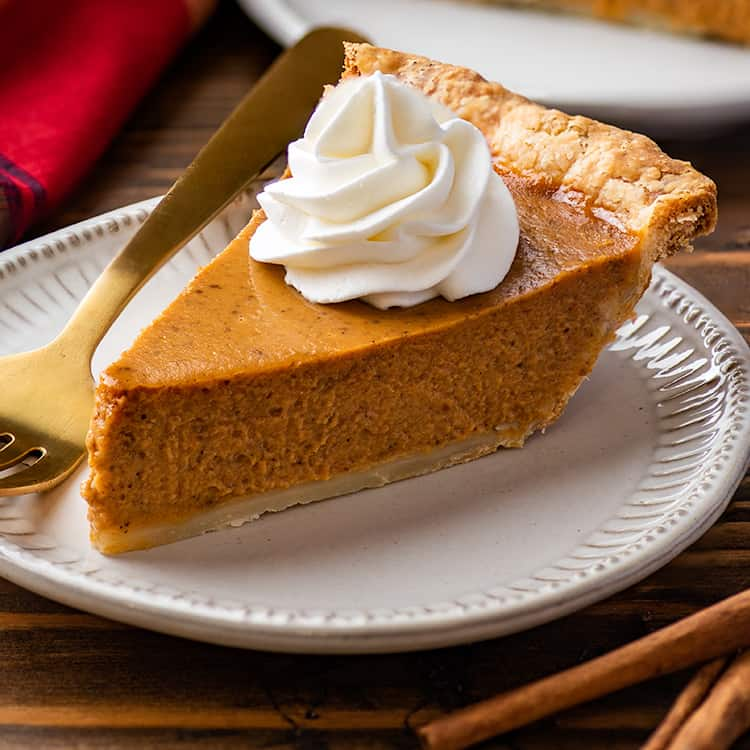

Pumpkin Pie

The Best Pumpkin Pie You'll Ever Have!
If you're ready for fall, this is the perfect recipe to start the season right. The perfect dessert for family and friends, and of course for yourself.This will be a simple yet delicious take on this decade old favorite. Using fresh pumpkin and sweetened condesensed milk and a dash of some warm cinnamon.Everyone will be wanting more!
Ingredients
- 1 (15 ounce) can pumpkin puree
- 1 (14 ounce) can Eagle Brand Sweetened Condensed Milk
- 2 large eggs
- 1 teaspoon ground cinnamon
- 1/2 teaspoon ground ginger
- 1/2 teaspoon ground nutmeg
- 1/2 teaspoon salt
- 1 (9 inch) unbaked pie crust
Steps
- Preheat oven to 425 degrees F (220 degrees C)
- Whisk pumpkin puree, condensed milk, eggs, cinnamon, ginger, nutmeg, and salt together in a medium bowl until smooth.
- Pour into crust. Bake in the preheated oven for 15 minutes.
- Reduce oven temperature to 350 degrees F (175 degrees C) and continue baking until a knife inserted 1 inch from the crust comes clean, 35 to 40 minutes. Let cool before serving.
- Enjoy!